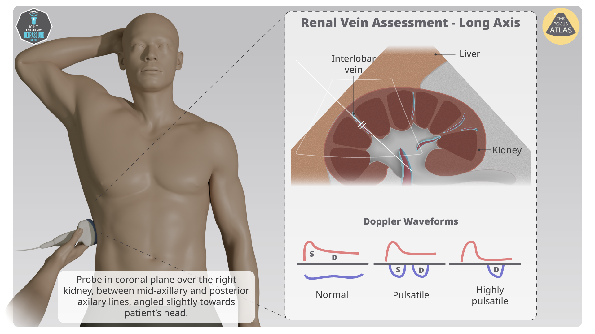

Your Practical Guide to Understanding VExUS
Introduction
Call it what you want—"Fluid Overload", "Venous Hypertension", "Fluid Up", "Venous Congestion" - they all mean the same thing: the venous circulation is too full, and it's causing problems.1 For a long time, the medical field has focused on arterial hypotension as the main cause of tissue hypoperfusion- and that's understandable! Sepsis, hypovolemia, and hemorrhage are all serious problems. However, we are increasingly realizing that the other side of the vasculature, venous return, can be equally important to our patients with cardiac or renal failure or the critically ill.234 Venous congestion leads to cardiorenal AKI, pulmonary edema, worsening cardiac function, poor wound healing, and a host of other conditions.56 The problem is that finding venous pressures is much harder than finding arterial pressures! You can't just use a cuff. That's why we spend hours poking at legs, squinting at necks, and generally shrugging our shoulders. When we really want to know, we often perform a right heart catheterization, putting a pressure transducer into the heart itself. But that's expensive, time-consuming, and above all, risky to the patient! So wouldn't it be great if we had a cheap, noninvasive, low-risk alternative, that could tell us what we need to know without getting all up in the patient's pulmonary arteries?
That's where Venous Excess Ultrasound (VExUS) comes in.
What Is VExUS?
VExUS is a 4-point Doppler ultrasound protocol that measures the direction and speed of venous blood flow, data that can be used to assess venous pressure. It was developed by a group of physicians based in Toronto, Canada, who showed that their VExUS technique could predict when cardiac surgery patients would develop acute kidney injury (AKI).7 Since that time VExUS has been shown to correlate strongly with right heart catheterization values,8 cardiorenal AKI,9 and mortality in patients with heart failure.10
The VExUS components are:
- Inferior Vena Cava (IVC) Diameter
- Hepatic Vein Doppler
- Portal Vein Doppler
- Renal Vein Doppler
- Ultrasound Machine: Must have 2D imaging, color Doppler, and pulsed-wave Doppler capabilities. Electrocardiogram gating adds to the interpretability of the exam, but is not essential.
- Supplies: Ultrasound gel, gloves.
- Patient Positioning: Supine or slightly recumbent, table adjusted to the operator's waist level.
- Kidneys: Venous congestion increases renal vein pressure, decreases glomerular filtration gradient, and can lead to acute kidney injury.
- Liver: Elevated hepatic venous pressure increases portal pressure and can impair hepatic function.
- Intestines: Venous congestion can lead to intestinal edema, malabsorption, and bacterial translocation.
- Brain: Increased venous pressure can elevate intracranial pressure and impair cerebral perfusion.
- Normal Flow: Continuous, minimally phasic flow with subtle respiratory variation.
- Mild Congestion: Increased pulsatility with partial flow reversal during cardiac cycles.
- Moderate Congestion: Marked pulsatility with periods of flow cessation.
- Severe Congestion: To-and-fro flow or frank flow reversal, indicating critical venous congestion.
- Right Atrial Pressure (RAP): The central measurement in venous congestion. Elevated RAP is transmitted backward through the venous system, affecting IVC, hepatic, portal, and renal veins.
- Cardiac Output (CO): Represents the heart's pumping function. Venous congestion can reduce CO by impairing ventricular filling and function.
- Left Atrial Pressure (LAP): Elevated LAP leads to pulmonary congestion, manifesting as B-lines on lung ultrasound. This is often associated with, but distinct from, systemic venous congestion.
- IVC Assessment: Evaluates central venous pressure with diameter and collapsibility.
- Hepatic Vein Doppler: Provides information about right atrial pressure and function.
- Portal Vein Doppler: Reflects venous congestion's impact on splanchnic circulation.
- Renal Vein Doppler: Shows how venous congestion affects kidney perfusion.
- Lung Ultrasound: B-lines indicate pulmonary congestion from elevated left heart pressures.
Why Use VExUS?
VExUS can help you understand your patient's level of venous congestion, which can inform decisions about whether to give fluids, administer diuretic medications, transfuse blood products, or start vasopressor medications. The technique is noninvasive, easily repeatable, and does not require advanced ultrasound or echocardiography techniques.
Important Note: VExUS is a tool to enhance clinical judgment, not replace it. Always integrate your findings with the patient's history, physical exam, and other investigations.
VExUS Step-by-Step:
1. Equipment and Preparation
2. Inferior Vena Cava (IVC) Assessment
Measure the IVC using the curvilinear or phased-array probe in the subxiphoid view. Measure the diameter of the IVC just distal to the insertion of the hepatic vein into the IVC.
3. Hepatic Vein
Place the doppler gate over any of the principal branches of the hepatic vein.
4. Portal Vein
Place the doppler gate over any portion of the portal vein, distinguishable by its thick echogenic border.
5. Renal Vein
Place the doppler gate over distal portion of the renal interlobularvein
VExUS Grading System
| Grade | IVC Diameter | Hepatic Vein Flow | Portal Vein Flow | Intrarenal Vein Flow |
|---|---|---|---|---|
| 0 | ≤ 2 cm | Normal S > D | Normal Phasic | Continuous |
| 1 | 2–2.5 cm | Slight Reduction in S | Mild Pulsatility | Slight Interruption |
| 2 | > 2.5 cm | S < D / Reversal | Marked Pulsatility | Intermittent or Biphasic |
| 3 | > 2.5 cm + Minimal Collapse | Severe Abnormal Flow | To-and-Fro or Reversal | Reversal |
Understanding Organ Perfusion Pressure

Organ perfusion pressure is a critical concept in understanding venous congestion and its impact on tissue health. It is defined as the difference between arterial inflow pressure and venous outflow pressure.
Perfusion Pressure = Arterial Pressure - Venous Pressure
While we often focus on arterial pressure as the main determinant of organ perfusion, increased venous pressure can have equally detrimental effects on tissue perfusion. When venous pressure rises (venous congestion), it reduces the pressure gradient across the organ, resulting in decreased blood flow despite normal arterial pressure.
This mechanism explains why venous congestion can lead to organ dysfunction even with normal arterial pressure and cardiac output. Organs particularly sensitive to venous congestion include:
VExUS assessment helps identify and quantify venous congestion, allowing clinicians to intervene before significant organ dysfunction occurs.
Venous Congestion on POCUS: Flow Patterns
Venous Doppler waveforms provide valuable information about central venous pressure and venous congestion. As venous congestion worsens, characteristic changes in flow patterns become evident on Doppler ultrasound:
Flow Pattern Progression in Venous Congestion:
The progression of pulsatility in veins that normally show continuous flow (such as portal and intrarenal veins) is particularly significant. Pulsatility develops when pressure waves from the right atrium are transmitted through the venous system due to increased central venous pressure and reduced venous compliance.
Flow reversal represents the most severe manifestation, indicating that pressure waves are strong enough to overcome forward flow, resulting in retrograde movement of blood. This has significant implications for organ function, as it compromises venous drainage and increases capillary pressure, leading to tissue edema and dysfunction.
VEXUS: The Complete Picture
The VEXUS protocol provides a comprehensive assessment of the cardiopulmonary-renal axis by examining how right atrial pressure and venous congestion affect multiple organ systems. This overview illustrates the interrelated nature of the hemodynamic parameters examined in VEXUS:
Key Components and Relationships:
The VEXUS protocol integrates multiple ultrasound findings to create a comprehensive picture of a patient's congestion status:
By examining this interconnected system, VEXUS allows clinicians to differentiate between right-sided (systemic venous) congestion, left-sided (pulmonary) congestion, or both, leading to more targeted therapeutic interventions.
Overview
The inferior vena cava (IVC) is the large vein that carries deoxygenated blood from the lower and middle body to the right atrium of the heart. Assessment of the IVC diameter and collapsibility provides valuable information about central venous pressure.
Acquisition Technique
Position the curvilinear or phased array probe in the subxiphoid position to visualize the IVC as it enters the right atrium. Measure the maximum diameter of the IVC just distal to the hepatic vein junction, approximately 2-3 cm from the right atrium.

Interpretation
A normal IVC diameter is typically 1.5-2.5 cm. An IVC diameter >2.5 cm suggests elevated central venous pressure, while a diameter <1.5 cm suggests reduced central venous pressure. The degree of respiratory variation (collapsibility) provides additional information about volume status.
Overview
The hepatic veins drain blood from the liver into the inferior vena cava. Doppler assessment of hepatic vein flow provides information about right atrial pressure and function.
Acquisition Technique
Using the curvilinear probe in the subcostal or intercostal approach, identify the hepatic veins where they join the IVC. Apply color Doppler to visualize flow, then use pulse wave Doppler with the sample gate placed 2-3 cm from the junction with the IVC.

Interpretation
Normal hepatic vein flow shows a triphasic pattern with two antegrade waves (S and D waves) and one retrograde wave (A wave). In elevated central venous pressure, the S wave amplitude decreases and may become less than the D wave. In severe cases, flow can become monophasic or show systolic flow reversal.
Overview
The portal vein carries blood from the digestive organs to the liver. Normal portal vein flow is continuous with minimal phasicity. Pulsatility in the portal vein is a sensitive indicator of venous congestion.
Acquisition Technique
Using the curvilinear probe in the right intercostal or subcostal approach, identify the portal vein at the porta hepatis. The portal vein has echogenic walls that help differentiate it from hepatic veins. Apply color Doppler to confirm flow direction, then use pulse wave Doppler with the sample gate in the main portal vein.

Interpretation
Normal portal vein flow is continuous with minimal phasicity. Increasing pulsatility suggests elevated right atrial pressure being transmitted through the liver. The pulsatility index can be calculated as (maximum velocity - minimum velocity) / mean velocity. A pulsatility index >0.5 indicates significant venous congestion.
Overview
The renal veins drain blood from the kidneys into the inferior vena cava. Doppler assessment of intrarenal veins provides valuable information about venous congestion and its impact on kidney perfusion.
Acquisition Technique
Using the curvilinear probe, obtain a longitudinal view of the kidney. Identify the interlobar or arcuate veins using color Doppler. These veins run parallel to the pyramids toward the renal sinus. Place the pulse wave Doppler sample gate over an interlobar vein.

Interpretation
Normal intrarenal venous flow is continuous with minimal phasicity. Increasing pulsatility suggests venous congestion. In severe congestion, flow can become discontinuous or even show reversal during cardiac cycles. These changes correlate with increased risk of acute kidney injury.
Conclusion
VExUS is a powerful POCUS technique for assessing venous congestion. By mastering the steps outlined above and understanding the potential pitfalls, you can incorporate VExUS into your own practice.